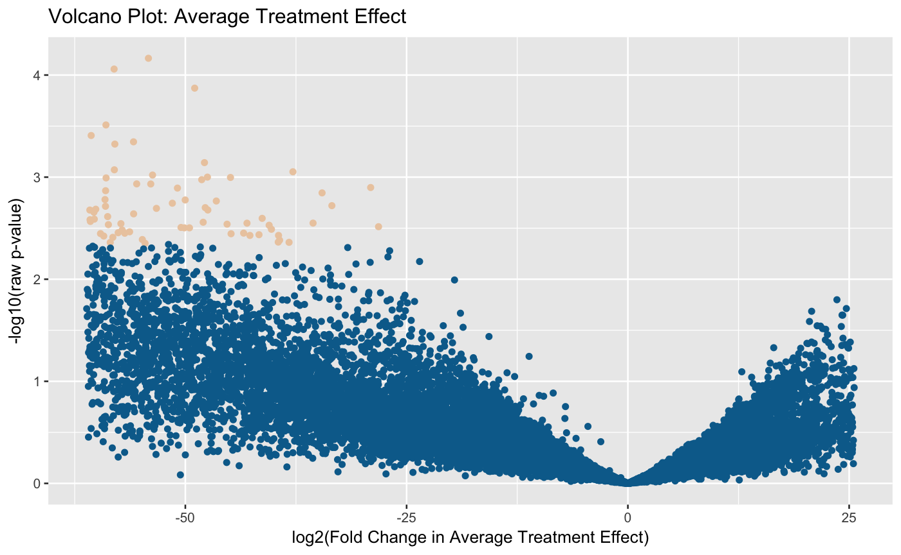

volcano_ic.RdVolcano plot of the log-changes in the target causal paramter against the log raw p-values from the moderated t-test.
volcano_ic(biotmle, fc_bound = 3, pval_bound = 0.2)
| biotmle | object of class |
|---|---|
| fc_bound | (numeric) - indicates the highest magnitude of the fold to be colored along the x-axis of the volcano plot; this limits the observations to be considered differentially expressed to those in a user-specified interval. |
| pval_bound | (numeric) - indicates the largest corrected p-value to be colored along the y-axis of the volcano plot; this limits observations considered as differentially expressed to those in a user-specified interval. |
object of class ggplot containing a standard volcano plot of
the log-fold change in the causal target parameter against the raw log
p-value computed from the moderated tests in modtest_ic.
library(dplyr) library(biotmleData) library(SummarizedExperiment) data(biomarkertmleOut) limmaTMLEout <- modtest_ic(biotmle = biomarkerTMLEout) volcano_ic(biotmle = limmaTMLEout)#